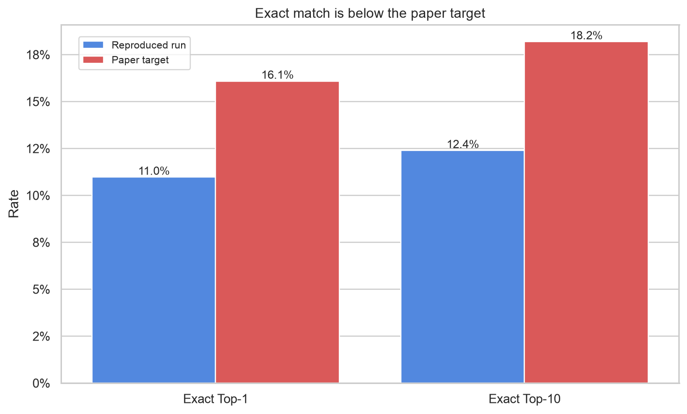
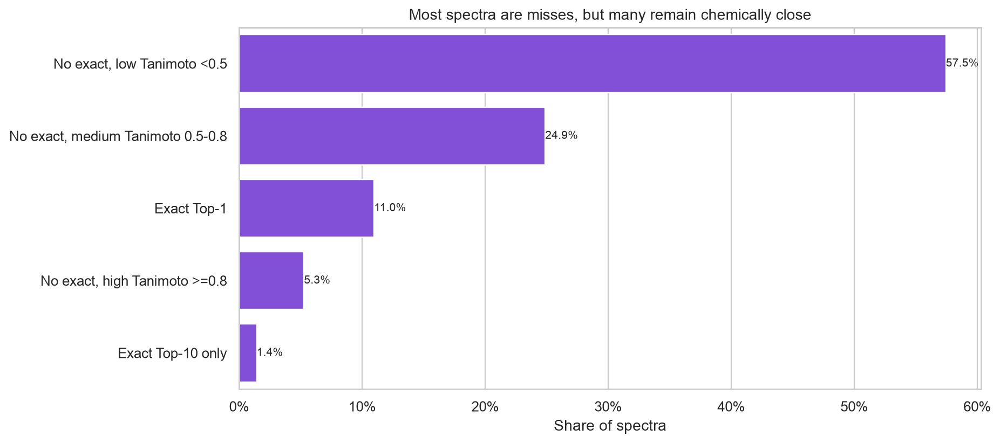
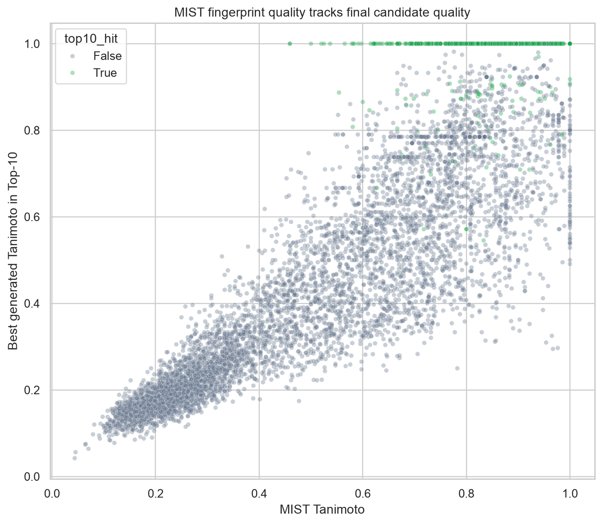
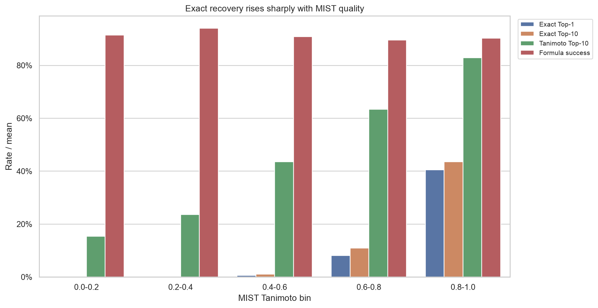
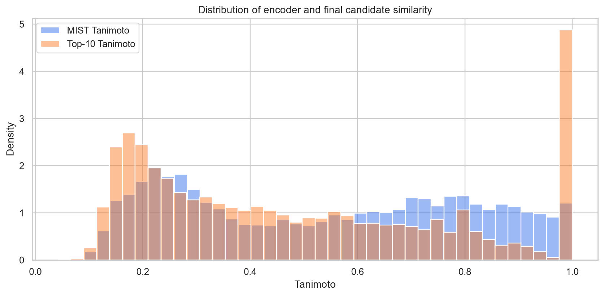
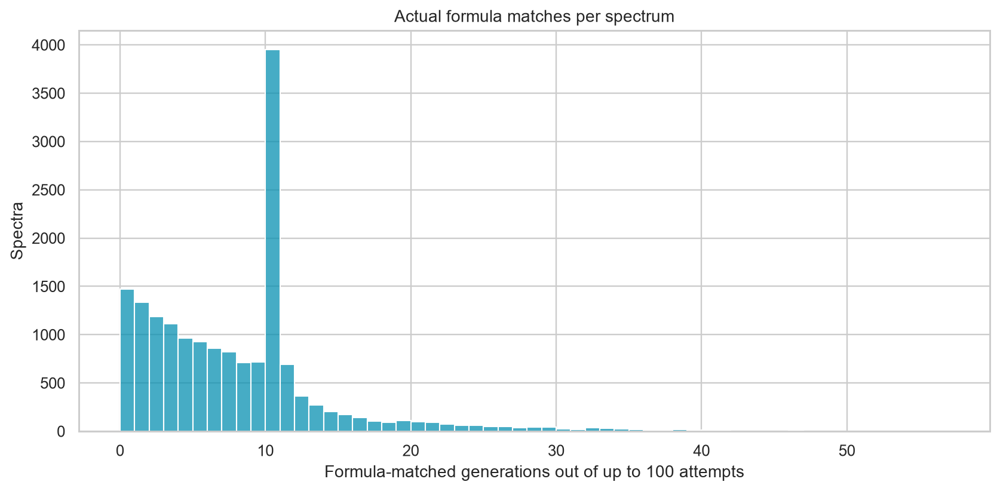
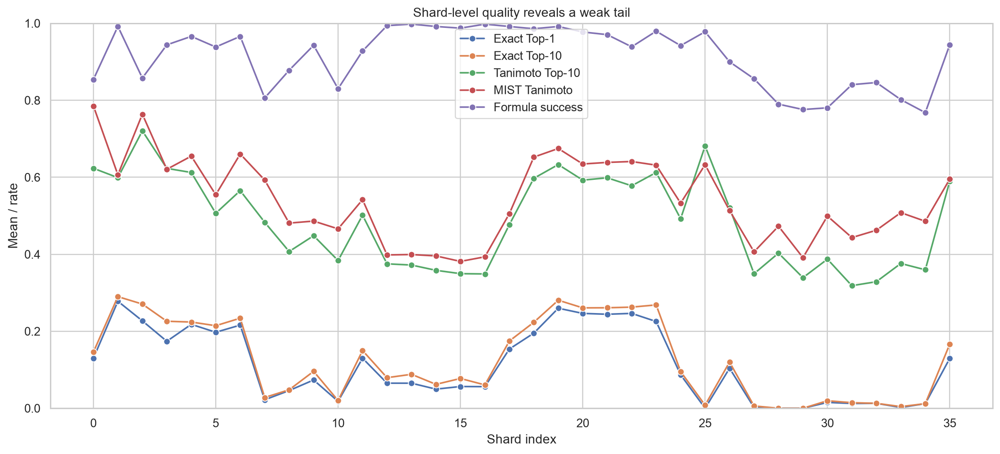
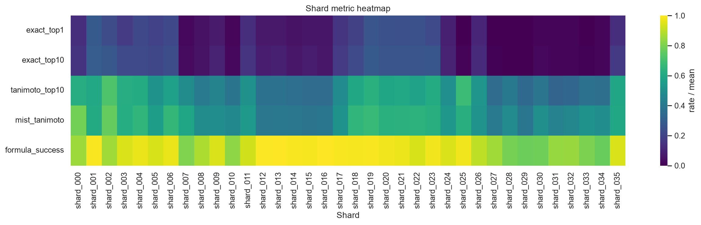
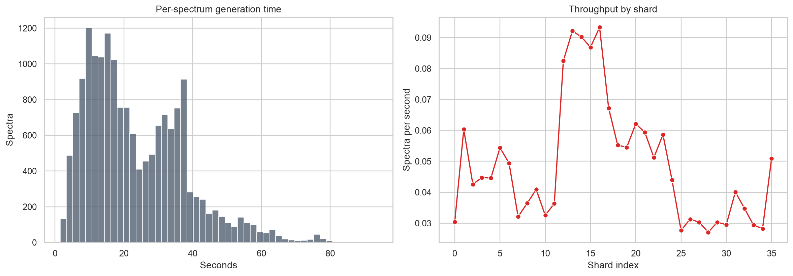
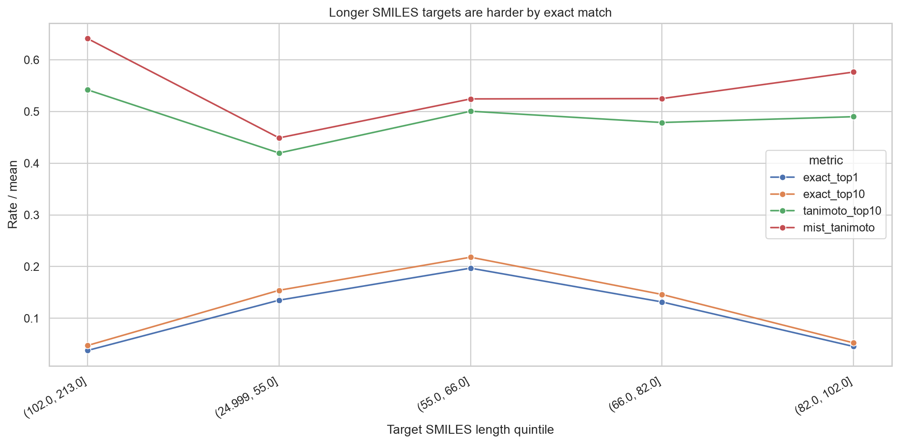

FRIGID MSG Base Reproduction EDA
Technical EDA for the full MSG FRIGID-base NGBoost run copied to Desktop. Source run: /Users/nikolenko/Desktop/FRIGID_spectrum_base_final_20260621/msg_base_full_ngboost.
Technical summary
The full run is internally consistent but does not reproduce the paper-level exact-match rates. Across 17,082 spectra and 2,905 unique target connectivity keys, Exact Top-1 is 10.97% and Exact Top-10 is 12.39%. The manifest paper targets are 16.09% and 18.19% respectively, leaving gaps of -5.12 and -5.80 percentage points.
The dominant quality driver is upstream fingerprint quality, not candidate-list length. The run almost always writes ten candidates, but Top-10 improves over Top-1 by only 1.42 percentage points. Spearman correlation between MIST Tanimoto and final Top-10 Tanimoto is 0.912; correlation with Exact Top-10 is weaker but still directional at 0.462.
The formula filter is useful but not enough to guarantee exact recovery. Formula success is 91.39%, yet Exact Top-10 remains 12.39%. This means many candidates pass formula filtering while having the wrong connectivity.
Exact-match gap versus the target
The aggregate JSON and a recomputation from per-shard CSVs agree to floating-point precision. The benchmark result is therefore not a reporting artifact in the copied output. The problem is analytical: the generated and reranked candidate lists miss the correct connectivity too often.

| metric | recomputed_from_shard_csv | aggregate_json | abs_diff_recomputed_vs_json | paper_target | delta_vs_paper |
|---|---|---|---|---|---|
| total_spectra | 17082.0000 | 17082.0000 | 0.0000 | ||
| exact_match_top1 | 0.1097 | 0.1097 | 0.0000 | 0.1609 | -0.0512 |
| exact_match_top10 | 0.1239 | 0.1239 | 0.0000 | 0.1819 | -0.0580 |
| tanimoto_top1_mean | 0.4598 | 0.4598 | 0.0000 | ||
| tanimoto_top10_mean | 0.4842 | 0.4842 | 0.0000 | ||
| mist_tanimoto_mean | 0.5407 | 0.5407 | 0.0000 | ||
| avg_formula_matches | 7.6138 | 7.6138 | 0.0000 | ||
| avg_predictions_collected | 9.9999 | 9.9999 | 0.0000 | ||
| avg_total_generated | 90.2425 | 90.2425 | 0.0000 | ||
| formula_match_success_rate | 0.9139 | 0.9139 | 0.0000 |
Data integrity and metric definitions
The EDA uses detailed_results.csv, predictions.csv, per-shard detailed_results.csv, and completed_shards.json. Exact match is computed by benchmark code using the first block of InChIKey, so it ignores stereochemistry. Tanimoto is Morgan fingerprint similarity to the ground truth molecule for evaluation. MIST Tanimoto measures predicted fingerprint quality before molecule generation.
| check | value | status |
|---|---|---|
| aggregate_detailed_rows | 17082 | ok |
| sharded_detailed_rows | 17082 | ok |
| prediction_rows | 17082 | ok |
| unique_spec_names | 17082 | ok |
| prediction_name_set_matches_detailed_spec_set | True | ok |
| completed_shard_count | 36 | ok |
| all_rows_have_10_predictions_recorded | 17081 | review |
| all_rows_have_formula_proposal_source | 17082 | ok |
One row records eight predictions instead of ten (MassSpecGymID0188658 in shard_010), and that row is an Exact Top-1/Top-10 success. It is not a material source of the aggregate quality gap. Formula statistics need careful reading: benchmark aggregation uses total_formula_matched for actual formula matches, not the padded formula_matches_collected candidate count.
Outcome distribution
Exact hits are a small part of the output. A meaningful slice of misses still has high structural similarity, but the low-similarity miss bucket is too large to be explained only by tie-breaking or ranking noise.

| outcome_bucket | spectra | share | avg_tanimoto_top10 | avg_mist_tanimoto | formula_success | median_target_smiles_len |
|---|---|---|---|---|---|---|
| No exact, low Tanimoto <0.5 | 9814.0000 | 0.5745 | 0.2715 | 0.3600 | 0.9038 | 70.0000 |
| No exact, medium Tanimoto 0.5-0.8 | 4250.0000 | 0.2488 | 0.6438 | 0.7303 | 0.9059 | 88.0000 |
| Exact Top-1 | 1874.0000 | 0.1097 | 0.9936 | 0.8783 | 1.0000 | 63.0000 |
| No exact, high Tanimoto >=0.8 | 901.0000 | 0.0527 | 0.8668 | 0.8457 | 0.8590 | 101.0000 |
| Exact Top-10 only | 243.0000 | 0.0142 | 0.9381 | 0.7852 | 1.0000 | 63.0000 |
MIST fingerprint quality is the main bottleneck
Cases with low MIST similarity almost never recover the exact molecule. In the two lowest MIST bins there are 6,545 spectra and weighted Exact Top-10 is 0.00%. In the highest MIST bin, Exact Top-10 rises to 43.56%. The final generator still makes mistakes at high MIST, but the sharp separation by MIST bin makes the encoder a primary failure surface.



| mist_bin | spectra | exact_top1 | exact_top10 | tanimoto_top1 | tanimoto_top10 | mist_tanimoto | formula_success | avg_actual_formula_matches | avg_generated | avg_generation_time_s | median_target_smiles_len |
|---|---|---|---|---|---|---|---|---|---|---|---|
| 0.0-0.2 | 1736.0000 | 0.0000 | 0.0000 | 0.1308 | 0.1537 | 0.1620 | 0.9142 | 6.2552 | 89.9435 | 22.6430 | 74.0000 |
| 0.2-0.4 | 4809.0000 | 0.0000 | 0.0000 | 0.2062 | 0.2356 | 0.2826 | 0.9403 | 6.7525 | 89.7070 | 18.5123 | 61.0000 |
| 0.4-0.6 | 2743.0000 | 0.0055 | 0.0109 | 0.3989 | 0.4358 | 0.5024 | 0.9085 | 6.2887 | 90.4951 | 24.2917 | 80.0000 |
| 0.6-0.8 | 4006.0000 | 0.0809 | 0.1091 | 0.6055 | 0.6333 | 0.7044 | 0.8959 | 7.0359 | 90.3887 | 27.0012 | 85.0000 |
| 0.8-1.0 | 3788.0000 | 0.4052 | 0.4356 | 0.8227 | 0.8288 | 0.8964 | 0.9031 | 10.9005 | 90.7218 | 25.9243 | 78.0000 |
Formula filtering mostly works but does not solve connectivity
The run generates valid molecules and usually finds at least one formula-matched candidate. However, formula success and exact recovery are far apart: 91.39% versus 12.39%. This is consistent with formula being a coarse constraint; many structures share the formula and the current ranking by predicted-fingerprint similarity does not reliably put the correct connectivity first.

| formula_actual_bin | spectra | exact_top1 | exact_top10 | tanimoto_top1 | tanimoto_top10 | mist_tanimoto | formula_success | avg_actual_formula_matches | avg_generated | avg_generation_time_s | median_target_smiles_len |
|---|---|---|---|---|---|---|---|---|---|---|---|
| 0 | 1471.0000 | 0.0000 | 0.0000 | 0.4181 | 0.4407 | 0.5811 | 0.0000 | 0.0000 | 100.0000 | 41.9521 | 107.0000 |
| 1-2 | 2525.0000 | 0.0044 | 0.0067 | 0.4086 | 0.4324 | 0.5443 | 1.0000 | 1.4713 | 100.0000 | 35.9994 | 95.0000 |
| 3-5 | 3007.0000 | 0.0236 | 0.0296 | 0.4117 | 0.4397 | 0.5079 | 1.0000 | 3.9365 | 100.0000 | 28.6494 | 84.0000 |
| 6-9 | 3112.0000 | 0.0508 | 0.0620 | 0.4075 | 0.4346 | 0.4752 | 1.0000 | 7.4123 | 100.0000 | 22.6269 | 71.0000 |
| 10+ | 6967.0000 | 0.2345 | 0.2609 | 0.5314 | 0.5536 | 0.5742 | 1.0000 | 13.1247 | 76.0761 | 13.2281 | 60.0000 |
Shard-level failures are concentrated in the tail
Quality is not uniform across the 36 shards. Several tail shards have near-zero Exact Top-1 and Top-10 even when some retain moderate Tanimoto, which pulls down the aggregate. This is either a distribution shift in later MassSpecGym IDs, a data ordering issue, or a subset where MIST/formula-conditioned generation is systematically weaker.


Worst shards by exact match
| shard | spectra | exact_top1 | exact_top10 | tanimoto_top1 | tanimoto_top10 | mist_tanimoto | formula_success | avg_actual_formula_matches | avg_generated | avg_generation_time_s | median_target_smiles_len | shard_index |
|---|---|---|---|---|---|---|---|---|---|---|---|---|
| shard_029 | 500.0000 | 0.0000 | 0.0000 | 0.3145 | 0.3392 | 0.3912 | 0.7760 | 3.4760 | 97.4100 | 32.8508 | 85.0000 | 29.0000 |
| shard_028 | 500.0000 | 0.0000 | 0.0000 | 0.3778 | 0.4030 | 0.4729 | 0.7900 | 2.9160 | 98.3840 | 36.7506 | 102.0000 | 28.0000 |
| shard_025 | 500.0000 | 0.0000 | 0.0080 | 0.6288 | 0.6812 | 0.6327 | 0.9780 | 5.6540 | 97.4620 | 35.9743 | 102.0000 | 25.0000 |
| shard_027 | 500.0000 | 0.0020 | 0.0060 | 0.3241 | 0.3495 | 0.4064 | 0.8560 | 3.7640 | 97.9140 | 32.8259 | 84.0000 | 27.0000 |
| shard_033 | 464.0000 | 0.0022 | 0.0043 | 0.3532 | 0.3761 | 0.5081 | 0.8017 | 2.8319 | 99.4526 | 33.8305 | 93.0000 | 33.0000 |
| shard_034 | 500.0000 | 0.0120 | 0.0120 | 0.3375 | 0.3597 | 0.4857 | 0.7680 | 3.7920 | 95.0860 | 35.3130 | 90.0000 | 34.0000 |
| shard_031 | 483.0000 | 0.0124 | 0.0145 | 0.2947 | 0.3184 | 0.4434 | 0.8406 | 4.4886 | 94.7950 | 24.7800 | 82.0000 | 31.0000 |
| shard_032 | 468.0000 | 0.0128 | 0.0128 | 0.3068 | 0.3288 | 0.4624 | 0.8462 | 4.0983 | 97.5214 | 28.5803 | 88.0000 | 32.0000 |
| shard_030 | 460.0000 | 0.0152 | 0.0196 | 0.3642 | 0.3873 | 0.4992 | 0.7804 | 3.5500 | 97.0065 | 33.6985 | 92.0000 | 30.0000 |
| shard_010 | 500.0000 | 0.0180 | 0.0200 | 0.3559 | 0.3837 | 0.4660 | 0.8300 | 5.5220 | 90.3160 | 30.5506 | 106.0000 | 10.0000 |
| shard_007 | 500.0000 | 0.0220 | 0.0280 | 0.4631 | 0.4832 | 0.5929 | 0.8060 | 4.8300 | 96.3680 | 30.9652 | 93.0000 | 7.0000 |
| shard_008 | 500.0000 | 0.0460 | 0.0480 | 0.3844 | 0.4072 | 0.4810 | 0.8780 | 6.8580 | 88.8880 | 27.2843 | 88.0000 | 8.0000 |
Best shards by exact match
| shard | spectra | exact_top1 | exact_top10 | tanimoto_top1 | tanimoto_top10 | mist_tanimoto | formula_success | avg_actual_formula_matches | avg_generated | avg_generation_time_s | median_target_smiles_len | shard_index |
|---|---|---|---|---|---|---|---|---|---|---|---|---|
| shard_001 | 500.0000 | 0.2780 | 0.2900 | 0.5799 | 0.5990 | 0.6065 | 0.9920 | 10.9120 | 88.0020 | 16.4198 | 60.0000 | 1.0000 |
| shard_019 | 481.0000 | 0.2599 | 0.2807 | 0.6154 | 0.6331 | 0.6748 | 0.9917 | 10.5010 | 87.1164 | 18.1788 | 64.0000 | 19.0000 |
| shard_022 | 491.0000 | 0.2464 | 0.2627 | 0.5586 | 0.5779 | 0.6410 | 0.9389 | 9.9898 | 87.8310 | 19.3663 | 67.0000 | 22.0000 |
| shard_020 | 487.0000 | 0.2464 | 0.2608 | 0.5766 | 0.5926 | 0.6345 | 0.9774 | 11.0862 | 88.3080 | 15.9441 | 65.0000 | 20.0000 |
| shard_021 | 475.0000 | 0.2442 | 0.2611 | 0.5795 | 0.5987 | 0.6387 | 0.9705 | 10.0189 | 88.2968 | 16.6858 | 65.0000 | 21.0000 |
| shard_002 | 436.0000 | 0.2271 | 0.2706 | 0.6937 | 0.7206 | 0.7639 | 0.8578 | 9.9725 | 92.7867 | 23.3006 | 59.0000 | 2.0000 |
| shard_023 | 488.0000 | 0.2254 | 0.2684 | 0.5878 | 0.6124 | 0.6315 | 0.9795 | 10.1762 | 88.8607 | 16.8930 | 66.0000 | 23.0000 |
| shard_004 | 500.0000 | 0.2180 | 0.2240 | 0.5929 | 0.6125 | 0.6549 | 0.9660 | 10.5480 | 85.3180 | 22.2418 | 68.0000 | 4.0000 |
| shard_006 | 500.0000 | 0.2160 | 0.2340 | 0.5497 | 0.5653 | 0.6605 | 0.9660 | 10.6600 | 84.4480 | 20.0715 | 62.0000 | 6.0000 |
| shard_005 | 471.0000 | 0.1975 | 0.2144 | 0.4809 | 0.5065 | 0.5547 | 0.9384 | 10.9023 | 81.4161 | 18.2255 | 64.0000 | 5.0000 |
| shard_018 | 497.0000 | 0.1952 | 0.2233 | 0.5769 | 0.5973 | 0.6524 | 0.9859 | 10.2535 | 88.5231 | 17.9342 | 67.0000 | 18.0000 |
| shard_003 | 500.0000 | 0.1740 | 0.2260 | 0.5954 | 0.6232 | 0.6208 | 0.9440 | 9.1360 | 88.3480 | 22.1928 | 64.0000 | 3.0000 |
Runtime is generation-bound
Summed shard elapsed time is 112.3 hours and summed generation time is 111.5 hours. The mean shard-level generation-time percentage is 99.22%, so the benchmark is dominated by molecule generation loops rather than CSV aggregation or scoring. Per-spectrum generation time is therefore a direct function of attempts, batch size, model latency, and early stopping after enough unique formula matches.

| shard | rows | total_spectra | elapsed_time_seconds | spectra_per_second | exact_match_top1 | exact_match_top10 | tanimoto_top1_mean | tanimoto_top10_mean | mist_tanimoto_mean | avg_formula_matches | avg_predictions_collected | avg_total_generated | formula_match_success_rate | avg_attempts_to_match | never_matched_rate | total_generation_time | generation_time_percentage | total_elapsed_time_seconds | proposal_source_counts | shard_index |
|---|---|---|---|---|---|---|---|---|---|---|---|---|---|---|---|---|---|---|---|---|
| shard_000 | 500.0000 | 500.0000 | 16446.2657 | 0.0304 | 0.1300 | 0.1460 | 0.6138 | 0.6233 | 0.7853 | 5.9180 | 10.0000 | 90.0300 | 0.8540 | 28.9514 | 0.1460 | 16357.4708 | 99.4601 | 16446.2657 | [['formula', 500]] | 0.0000 |
| shard_001 | 500.0000 | 500.0000 | 8289.1182 | 0.0603 | 0.2780 | 0.2900 | 0.5799 | 0.5990 | 0.6065 | 10.9120 | 10.0000 | 88.0020 | 0.9920 | 14.3080 | 0.0080 | 8209.8997 | 99.0443 | 8289.1182 | [['formula', 500]] | 1.0000 |
| shard_002 | 436.0000 | 436.0000 | 10233.7271 | 0.0426 | 0.2271 | 0.2706 | 0.6937 | 0.7206 | 0.7639 | 9.9725 | 10.0000 | 92.7867 | 0.8578 | 20.2655 | 0.1422 | 10159.0759 | 99.2705 | 10233.7271 | [['formula', 436]] | 2.0000 |
| shard_003 | 500.0000 | 500.0000 | 11178.4578 | 0.0447 | 0.1740 | 0.2260 | 0.5954 | 0.6232 | 0.6208 | 9.1360 | 10.0000 | 88.3480 | 0.9440 | 18.2586 | 0.0560 | 11096.4127 | 99.2660 | 11178.4578 | [['formula', 500]] | 3.0000 |
| shard_004 | 500.0000 | 500.0000 | 11204.4360 | 0.0446 | 0.2180 | 0.2240 | 0.5929 | 0.6125 | 0.6549 | 10.5480 | 10.0000 | 85.3180 | 0.9660 | 17.9175 | 0.0340 | 11120.9193 | 99.2546 | 11204.4360 | [['formula', 500]] | 4.0000 |
| shard_005 | 471.0000 | 471.0000 | 8657.9455 | 0.0544 | 0.1975 | 0.2144 | 0.4809 | 0.5065 | 0.5547 | 10.9023 | 10.0000 | 81.4161 | 0.9384 | 12.3893 | 0.0616 | 8584.2073 | 99.1483 | 8657.9455 | [['formula', 471]] | 5.0000 |
| shard_006 | 500.0000 | 500.0000 | 10115.7692 | 0.0494 | 0.2160 | 0.2340 | 0.5497 | 0.5653 | 0.6605 | 10.6600 | 10.0000 | 84.4480 | 0.9660 | 15.8021 | 0.0340 | 10035.7452 | 99.2089 | 10115.7692 | [['formula', 500]] | 6.0000 |
| shard_007 | 500.0000 | 500.0000 | 15572.7914 | 0.0321 | 0.0220 | 0.0280 | 0.4631 | 0.4832 | 0.5929 | 4.8300 | 10.0000 | 96.3680 | 0.8060 | 32.7514 | 0.1940 | 15482.5988 | 99.4208 | 15572.7914 | [['formula', 500]] | 7.0000 |
| shard_008 | 500.0000 | 500.0000 | 13726.7810 | 0.0364 | 0.0460 | 0.0480 | 0.3844 | 0.4072 | 0.4810 | 6.8580 | 10.0000 | 88.8880 | 0.8780 | 23.3802 | 0.1220 | 13642.1708 | 99.3836 | 13726.7810 | [['formula', 500]] | 8.0000 |
| shard_009 | 490.0000 | 490.0000 | 11985.5234 | 0.0409 | 0.0735 | 0.0959 | 0.4177 | 0.4482 | 0.4862 | 7.6245 | 10.0000 | 89.7490 | 0.9429 | 21.1294 | 0.0571 | 11901.7256 | 99.3008 | 11985.5234 | [['formula', 490]] | 9.0000 |
| shard_010 | 500.0000 | 500.0000 | 15362.5793 | 0.0325 | 0.0180 | 0.0200 | 0.3559 | 0.3837 | 0.4660 | 5.5220 | 9.9960 | 90.3160 | 0.8300 | 28.7747 | 0.1700 | 15275.2949 | 99.4318 | 15362.5793 | [['formula', 500]] | 10.0000 |
| shard_011 | 500.0000 | 500.0000 | 13752.0646 | 0.0364 | 0.1300 | 0.1500 | 0.4777 | 0.5016 | 0.5419 | 7.6080 | 10.0000 | 92.7420 | 0.9280 | 22.1254 | 0.0720 | 13666.0346 | 99.3744 | 13752.0646 | [['formula', 500]] | 11.0000 |
Target complexity is a secondary stressor
Using SMILES length and token counts as rough local complexity proxies, longer targets generally show lower exact recovery. This is not a chemistry-perfect descriptor, but it is enough to flag that large or stereochemically dense molecules are harder in this run. Spearman correlation between target SMILES length and Exact Top-10 is -0.158.

| target_length_bin | spectra | exact_top1 | exact_top10 | tanimoto_top1 | tanimoto_top10 | mist_tanimoto | formula_success | avg_actual_formula_matches | avg_generated | avg_generation_time_s | median_target_smiles_len |
|---|---|---|---|---|---|---|---|---|---|---|---|
| (102.0, 213.0] | 2909.0000 | 0.0378 | 0.0474 | 0.5209 | 0.5420 | 0.6410 | 0.7119 | 3.1282 | 98.2025 | 44.2145 | 128.0000 |
| (24.999, 55.0] | 3502.0000 | 0.1351 | 0.1542 | 0.3920 | 0.4197 | 0.4490 | 0.9960 | 11.3053 | 79.4086 | 8.9576 | 48.0000 |
| (55.0, 66.0] | 3355.0000 | 0.1970 | 0.2182 | 0.4760 | 0.5005 | 0.5244 | 0.9931 | 10.5461 | 86.0948 | 13.9933 | 60.0000 |
| (66.0, 82.0] | 3449.0000 | 0.1316 | 0.1461 | 0.4560 | 0.4787 | 0.5250 | 0.9765 | 8.4146 | 90.5358 | 21.0483 | 74.0000 |
| (82.0, 102.0] | 3867.0000 | 0.0455 | 0.0525 | 0.4647 | 0.4900 | 0.5763 | 0.8668 | 4.3869 | 97.4026 | 31.4977 | 93.0000 |
Case-level examples
The examples CSV contains full target/proposal/prediction SMILES for exact hits, Top-10-only hits, high-Tanimoto near misses, low-MIST failures, and high-MIST no-exact failures. This is the right starting point for manual chemistry inspection.
| example_type | shard | spec_name | target_inchi_key | exact_match_top1 | exact_match_top10 | tanimoto_top1 | tanimoto_top10 | mist_tanimoto | total_formula_matched | total_generated | generation_time | target_smiles | proposal_smiles | top_prediction_smiles |
|---|---|---|---|---|---|---|---|---|---|---|---|---|---|---|
| top1_exact_examples | shard_000 | MassSpecGymID0012632 | ULGZDMOVFRHVEP | 1.0000 | 1.0000 | 1.0000 | 1.0000 | 0.9367 | 5.0000 | 100.0000 | 37.2298 | CC[C@@H]1[C@@]([C@@H]([C@H](C(=O)[C@@H](C[C@@]([C@@H]([C@H]([C@@H]([C@H](C(=O)O1)C)O[C@H]2C[C@@]([C@H]([C@@H](O2)C)O)(C)OC)C)O[C@H]3[C@@H]([C@H](C[C@H](O3)C)N(C)C)O)(C)O)C)C)O)(C)O | CC[C@H]1OC(=O)[C@H](C)[C@@H](O[C@H]2C[C@@](C)(OC)[C@@H](O)[C@@H](C)O2)[C@@H](C)[C@H](O[C@@H]2O[C@@H](C)C[C@H](N(C)C)[C@@H]2O)[C@](C)(O)C[C@@H](C)C(=O)[C@H](C)[C@@H](O)[C@]1(C)O | ['CC[C@H]1OC(=O)[C@H](C)[C@@H](O[C@H]2C[C@@](C)(OC)[C@@H](O)[C@@H](C)O2)[C@@H](C)[C@H](O[C@@H]2O[C@@H](C)C[C@H](N(C)C)[C@@H]2O)[C@](C)(O)C[C@@H](C)C(=O)[C@H](C)[C@@H](O)[C@]1(C)O', 'CC[C@@H]1OC(=O)[C@H](C)[C@@H](O[C@@H]2C[C@@](C)(OC)[C@@H](O)[C@H](C)O2)[C@H](C)[C@@H](O[C@@H]2O[C@H](C)C[C@@H](N(C)C)[C@H]2O)[C@@](C)(O)C[C@@H](C)C(=O)[C@H](O)[C@]1(C)O', 'CC[C@H]1OC(=O)[C@H](C)[C@@H](O[C@H]2C[C@@](C)(OC)[C@@H](O)[C@@H](C)O2)[C@H](C)[C@@H](O[C@H]2O[C@H](C)C[C@@H](N(C)C)[C@H]2O)[C@](C)(O)C[C@@H](C)C(=O)[C@H](C)[C@]1(C)O', 'CC[C@@H]1OC(=O)[C@H](C)[C@H](O[C@@H]2C[C@@](C)(OC)[C@@H](O)[C@H](C)O2)[C@H](C)[C@H](O[C@H]2O[C@H](C)C[C@H](N(C)C)[C@H]2O)[C@](C)(O)C[C@H](C)[C@H](C)[C@@H](O)[C@]1(C)O', 'CC[C@H]1OC(=O)[C@H](C)[C@@H](O[C@@H]2C[C@](C)(OC)[C@H](O)[C@H](C)O2)[C@H](C)[C@@H](O[C@@H]2O[C@H](C)C[C@H](N(C)C)[C@H]2O)[C@](C)(O)C[C@@H](C)[C@H](O)[C@@H](O)[C@]1(C)O'] |
| top1_exact_examples | shard_019 | MassSpecGymID0225619 | DKZYXHCYPUVGAF | 1.0000 | 1.0000 | 1.0000 | 1.0000 | 0.9667 | 13.0000 | 100.0000 | 18.1589 | CC(=O)C1=CN=C2C=CC(=NC2=C1NC3CCC(CC3)CN(C)C)C4=CC(=C(C(=C4)Cl)O)Cl | CC(=O)c1cnc2ccc(-c3cc(Cl)c(O)c(Cl)c3)nc2c1N[C@H]1CC[C@@H](CN(C)C)CC1 | ['CC(=O)c1cnc2ccc(-c3cc(Cl)c(O)c(Cl)c3)nc2c1N[C@H]1CC[C@@H](CN(C)C)CC1', 'CC(=O)c1cnc2ccc(-c3cc(Cl)c(O)c(Cl)c3)nc2c1NC1CCC(CN(C)C)C1', 'CC(=O)c1cnc2ccc(-c3cc(Cl)c(NC4CCC(CN(C)C)CC4)c(Cl)c3)nc2c1O', 'CC(=O)c1cnc2ccc(-c3cc(Cl)c(O)cc3Cl)nc2c1NC1CCC(CN(C)C)CC1', 'CC(=O)c1cnc2ccc(-c3cc(Cl)c(O)c([C@H]4CC[C@H](CN(C)C)CC4)c3)nc2c1NCl'] |
| top1_exact_examples | shard_019 | MassSpecGymID0225617 | DKZYXHCYPUVGAF | 1.0000 | 1.0000 | 1.0000 | 1.0000 | 0.9508 | 19.0000 | 100.0000 | 17.8290 | CC(=O)C1=CN=C2C=CC(=NC2=C1NC3CCC(CC3)CN(C)C)C4=CC(=C(C(=C4)Cl)O)Cl | CC(=O)c1cnc2ccc(-c3cc(Cl)c(O)c(Cl)c3)nc2c1NC1CCC(CN(C)C)CC1 | ['CC(=O)c1cnc2ccc(-c3cc(Cl)c(O)c(Cl)c3)nc2c1NC1CCC(CN(C)C)CC1', 'CC(=O)c1cnc2ccc(-c3cc(Cl)c(NC4CCC(CN(C)C)CC4)c(Cl)c3)nc2c1O', 'CC(=O)c1cnc2ccc(-c3cc(Cl)c(O)c(Cl)c3)nc2c1NC1CCC(CN(C)N)CC1', 'CC(=O)c1cnc2ccc(-c3cc(Cl)cc(Cl)c3O)nc2c1NC1CCC(CN(C)C)CC1', 'CNCCC1CCC(Nc2c(Cl)cc(-c3ccc4ncc(C(C)=O)c(O)c4n3)cc2Cl)CC1'] |
| top1_exact_examples | shard_019 | MassSpecGymID0225610 | GOOYSJIWTIHOGW | 1.0000 | 1.0000 | 1.0000 | 1.0000 | 0.9655 | 25.0000 | 100.0000 | 15.2756 | CC(C)OC(=O)N1CCN(CC1)C2=NC3=C(C=NN3C=C2)C4=C(N=CC=C4)OC | COc1ncccc1-c1cnn2ccc(N3CCN(C(=O)OC(C)C)CC3)nc12 | ['COc1ncccc1-c1cnn2ccc(N3CCN(C(=O)OC(C)C)CC3)nc12', 'COc1ncccc1-c1cnn2ccc(N3CCN(C(=O)OC(C)C)C3)nc12', 'COc1ncccc1-c1cnn2ccc(N3CCN(C(=O)OC(C)O)CC3)nc12', '[CH2-]Oc1ncccc1-c1cnn2ccc(N3CCN(C(=O)OC(C)C)CC3)nc12', 'COc1ncccc1-c1cnn2ccc(N3CN(C(=O)OC(C)C)C3)nc12'] |
| top1_exact_examples | shard_019 | MassSpecGymID0225530 | QZFHIXARHDBPBY | 1.0000 | 1.0000 | 1.0000 | 1.0000 | 0.8906 | 16.0000 | 48.0000 | 7.6491 | COC(=O)NC1=C(N=C(N=C1N)C2=NN(C3=C2C=C(C=N3)F)CC4=CC=CC=C4F)N | COC(=O)Nc1c(N)nc(-c2nn(Cc3ccccc3F)c3ncc(F)cc23)nc1N | ['COC(=O)Nc1c(N)nc(-c2nn(Cc3ccccc3F)c3ncc(F)cc23)nc1N', 'COC(=O)Nc1nc(-c2nn(Cc3ccccc3F)c3ncc(F)cc23)nc(N)c1N', 'COC(=O)Nc1cnc(-c2nn(Cc3ccccc3F)c3ncc(F)cc23)nc1NN', 'COC(=O)N(N)c1cnc(-c2nn(Cc3ccccc3F)c3ncc(F)cc23)nc1N', 'CON(C=O)Nc1cnc(-c2nn(Cc3ccccc3F)c3ncc(F)cc23)nc1N'] |
| top1_exact_examples | shard_019 | MassSpecGymID0225499 | JTGUGSWLWPKCGF | 1.0000 | 1.0000 | 1.0000 | 1.0000 | 0.9492 | 23.0000 | 100.0000 | 20.1690 | CC(C)CC1(CCN(CC1)C(=O)C2=CC=C(C=C2)NS(=O)(=O)C3=CC=CC4=NC=CN=C43)O | CC(C)CC1(O)CCN(C(=O)c2ccc(NS(=O)(=O)c3cccc4nccnc34)cc2)CC1 | ['CC(C)CC1(O)CCN(C(=O)c2ccc(NS(=O)(=O)c3cccc4nccnc34)cc2)CC1', 'CC(C)CC1(O)CCCN(C(=O)c2ccc(NS(=O)(=O)c3cccc4nccnc34)cc2)CC1', 'CC(C)CC1(O)CCN(C(=O)c2ccc(NS(=O)(=O)c3cccc4nccnc34)cc2)C1', 'CC(C)CC1(CO)CCN(C(=O)c2ccc(NS(=O)(=O)c3cccc4nccnc34)cc2)C1', 'CC(C)C[C@@]1(O)CCN(C(=O)Cc2ccc(NS(=O)(=O)c3cccc4nccnc34)cc2)C1'] |
| top1_exact_examples | shard_019 | MassSpecGymID0225443 | YYBOLPLTQDKXPM | 1.0000 | 1.0000 | 1.0000 | 1.0000 | 0.9184 | 24.0000 | 77.0000 | 7.7288 | CC(C)(C(=O)O)SC1=C(C=NC=C1)C2=CC=C(C3=CC=CC=C32)C#N | CC(C)(Sc1ccncc1-c1ccc(C#N)c2ccccc12)C(=O)O | ['CC(C)(Sc1ccncc1-c1ccc(C#N)c2ccccc12)C(=O)O', 'CC(C)(Sc1cccc2c(-c3cnccc3C#N)cccc12)C(=O)O', 'CC(C)(SO)C(=O)c1ccncc1-c1ccc(C#N)c2ccccc12', 'CC(=O)C(O[11CH3])Sc1ccncc1-c1ccc(C#N)c2ccccc12', '[2H]COC(C)(C=O)Sc1ccncc1-c1ccc(C#N)c2ccccc12'] |
| top1_exact_examples | shard_019 | MassSpecGymID0225435 | CZGVOBIGEBDYTP | 1.0000 | 1.0000 | 1.0000 | 1.0000 | 0.9420 | 12.0000 | 63.0000 | 14.5674 | CCCC[C@@]1(CS(=O)(=O)C2=C(C=C(C(=C2)CNC(CC(=O)O)CC(=O)O)OC)[C@H](N1)C3=CC=CC=C3)CC | CCCC[C@]1(CC)CS(=O)(=O)c2cc(CNC(CC(=O)O)CC(=O)O)c(OC)cc2C(c2ccccc2)N1 | ['CCCC[C@]1(CC)CS(=O)(=O)c2cc(CNC(CC(=O)O)CC(=O)O)c(OC)cc2C(c2ccccc2)N1', 'CCCCC1(CC)CS(=O)(=O)c2cc(OC)c(CNC(CC(=O)O)CC(=O)O)cc2[C@@H](c2ccccc2)N1', 'CCCC[C@]1(CC)CS(=O)(=O)c2cc(CCN[C@@H](CC(=O)O)C(=O)O)c(OC)cc2[C@@H](c2ccccc2)N1', 'CCCC[C@]1(CC)CS(=O)(=O)c2cc(CN[C@H](CC(=O)O)C(=O)O)c(OC)cc2[C@@H](c2ccccc2C)N1', 'CCCCC1(CC)CS(=O)(=O)c2cc(NCC(CC(=O)O)CC(=O)O)c(OC)cc2C(c2ccccc2)N1'] |
| top1_exact_examples | shard_019 | MassSpecGymID0225433 | CZGVOBIGEBDYTP | 1.0000 | 1.0000 | 1.0000 | 1.0000 | 0.9559 | 13.0000 | 64.0000 | 14.5655 | CCCC[C@@]1(CS(=O)(=O)C2=C(C=C(C(=C2)CNC(CC(=O)O)CC(=O)O)OC)[C@H](N1)C3=CC=CC=C3)CC | CCCCC1(CC)CS(=O)(=O)c2cc(CNC(CC(=O)O)CC(=O)O)c(OC)cc2C(c2ccccc2)N1 | ['CCCCC1(CC)CS(=O)(=O)c2cc(CNC(CC(=O)O)CC(=O)O)c(OC)cc2C(c2ccccc2)N1', 'CCCC[C@]1(CC)CS(=O)(=O)c2cc(OC)c(CNC(CC(=O)O)CC(=O)O)cc2[C@@H](c2ccccc2)N1', 'CCCCC1(CC)CS(=O)(=O)c2cc(CCNC(CC(=O)O)C(=O)O)c(OC)cc2C(c2ccccc2)N1', 'CCCC[C@]1(CC)CS(=O)(=O)c2cc(NCC(CC(=O)O)CC(=O)O)c(OC)cc2C(c2ccccc2)N1', 'CCCCC1(CC)CS(=O)(=O)c2cc(NC(CC(=O)O)CC(=O)OC)c(OC)cc2C(c2ccccc2)N1'] |
| top1_exact_examples | shard_019 | MassSpecGymID0225426 | DYLUUSLLRIQKOE | 1.0000 | 1.0000 | 1.0000 | 1.0000 | 0.8909 | 19.0000 | 64.0000 | 11.1965 | CC(C)(CNC1=NC(=NC(=N1)C2=NC(=CC=C2)C(F)(F)F)NC3=CC(=NC=C3)C(F)(F)F)O | CC(C)(O)CNc1nc(Nc2ccnc(C(F)(F)F)c2)nc(-c2cccc(C(F)(F)F)n2)n1 | ['CC(C)(O)CNc1nc(Nc2ccnc(C(F)(F)F)c2)nc(-c2cccc(C(F)(F)F)n2)n1', 'CC(C)(O)CNc1cc(Nc2nc(-c3cccc(C(F)(F)F)n3)nc(C(F)(F)F)n2)ccn1', 'C[C@@](O)(CCCN(F)F)c1cc(Nc2nc(F)nc(-c3cccc(C(F)(F)F)n3)n2)ccn1', 'CC(C)(O)CNc1nc(Nc2cccc(C(F)(F)F)c2)nc(-c2nccc(C(F)(F)F)n2)n1', 'CC(C)(O)CCNc1nc(-c2cccc(C(F)(F)F)n2)nc(-c2nccc(C(F)(F)F)n2)n1'] |
| top10_only_examples | shard_013 | MassSpecGymID0207505 | WCARDDDMQORATQ | 0.0000 | 1.0000 | 0.6364 | 1.0000 | 0.5714 | 14.0000 | 93.0000 | 9.9374 | CC1=CC2=C(C=C1)C(=O)NC(=N2)NC3=NC(=CC(=N3)C4=CC=CC=C4)C | Cc1ccc2c(C)nc(Nc3nc(-c4ccccc4)cc(=O)[nH]3)nc2c1 | ['Cc1ccc2c(C)nc(Nc3nc(-c4ccccc4)cc(=O)[nH]3)nc2c1', 'Cc1ccc2c(=O)[nH]c(Nc3ncc(-c4ccccc4)c(C)n3)nc2c1', 'Cc1ccc2c(C)nc(Nc3ncc(-c4ccccc4)[nH]c3=O)nc2c1', 'Cc1ccc2c(=O)[nH]c(Nc3nc(C)cc(-c4ccccc4)n3)nc2c1', 'Cc1ccc2c(C)nc(Nc3nc4c(c(=O)[nH]3)=CC=CC=CC=4)nc2c1'] |
| top10_only_examples | shard_007 | MassSpecGymID0142429 | OWFJMIVZYSDULZ | 0.0000 | 1.0000 | 0.6111 | 1.0000 | 0.6111 | 12.0000 | 64.0000 | 12.6886 | CC1(C2C(C3C(C(=O)C(=C(C3(C(=O)C2=C(C4=C1C=CC=C4O)O)O)O)C(=O)N)N(C)C)O)O | CN(C)[C@@H]1C(=O)C(C(N)=O)=C(O)[C@@]2(O)C(=O)C3=C(O)c4c(O)cccc4[C@@](C)(O)O[C@@H]3C[C@@H]12 | ['CN(C)[C@@H]1C(=O)C(C(N)=O)=C(O)[C@@]2(O)C(=O)C3=C(O)c4c(O)cccc4[C@@](C)(O)O[C@@H]3C[C@@H]12', 'CN(C)[C@@H]1C(=O)C(C(N)=O)=C(O)[C@]2(O)C(=O)C3=C(O)c4c(O)cccc4[C@](C)(O)[C@@H]3[C@H](O)[C@@H]12', 'CN(C)[C@H]1C(=O)C(C(N)=O)=C(O)[C@@]2(O)C(=O)C3=C(O)c4c(O)cccc4[C@@](C)(O)[C@@H]3OC[C@H]12', 'C[C@@H]1O[C@H]2C(=C(O)c3c(O)cccc31)C(=O)[C@@]1(O)C(O)=C(C(N)=O)C(=O)[C@H](N(C)C)[C@@H]1[C@@H]2O', 'CN(C)[C@@H]1C(=O)C(C(N)=O)=C(O)[C@@]2(O)C(=O)C3=C(O)c4c(O)cccc4C(O)(O)[C@]3(C)C[C@@H]12'] |
| top10_only_examples | shard_012 | MassSpecGymID0203871 | PDLGLENBVYBASR | 0.0000 | 1.0000 | 0.9804 | 1.0000 | 0.7458 | 9.0000 | 100.0000 | 15.3339 | C1CCN(CC1)C(=O)C2CCN(CC2)C3=NC4=C(S3)N=C(C=C4)C5=CN=CC=C5 | O=C(C1CCN(c2nc3ccc(-c4cccnc4)nc3s2)CC1)N1CCCC1 | ['O=C(C1CCN(c2nc3ccc(-c4cccnc4)nc3s2)CC1)N1CCCC1', 'CC(=O)C1CCN(c2nc3ccc(-c4cccnc4)nc3s2)CC1', 'O=C(C1CCN(c2nc3ccc(-c4cccnc4)nc3s2)CC1)N1CCCCC1', 'O=C(C1CC1)C1CCN(c2nc3ccc(-c4cccnc4)nc3s2)CC1', 'NC(=O)C1CCN(c2nc3ccc(-c4cccnc4)nc3s2)CC1'] |
| top10_only_examples | shard_023 | MassSpecGymID0237810 | DLNUPKDFXMWRFP | 0.0000 | 1.0000 | 0.8500 | 1.0000 | 0.8947 | 7.0000 | 100.0000 | 27.3849 | CC(=CC(=O)CCC(=O)N1CCN(CC1)CC2=CC3=C(S2)C(=NC(=N3)C4=C5C=NNC5=CC=C4)N6CCOCC6)C | C/C=C\C(=O)CCC(=O)N1CCN(Cc2cc3nc(-c4cccc5[nH]ncc45)nc(N4CCOCC4)c3s2)CC1 | ['C/C=C\\C(=O)CCC(=O)N1CCN(Cc2cc3nc(-c4cccc5[nH]ncc45)nc(N4CCOCC4)c3s2)CC1', 'CC(C)=CC(=O)CCC(=O)N1CCN(Cc2cc3nc(-c4cccc5[nH]ncc45)nc(N4CCOCC4)c3s2)CC1', 'CC[CH]C(=O)CCC(=O)N1CCN(Cc2cc3nc(-c4cccc5[nH]ncc45)nc(N4CCOCC4)c3s2)CC1', 'C=CC(=O)CCC(=O)N1CCN(Cc2cc3nc(-c4cccc5[nH]ncc45)nc(N4CCOCC4)c3s2)CC1', 'CC(=O)CCC(=O)N1CCN(Cc2cc3nc(-c4cccc5[nH]ncc45)nc(N4CCOCC4)c3s2)CC1'] |
| top10_only_examples | shard_023 | MassSpecGymID0237138 | VCKUSRYTPJJLNI | 0.0000 | 1.0000 | 0.5068 | 1.0000 | 0.5833 | 6.0000 | 100.0000 | 13.6915 | COC1=C(C=C2C(=C1)C(=NC(=N2)N3CCN(CC3)C(=O)[C@H]4CCCO4)N)OC | COc1cc2nc(N(C)CCCNC(=O)C3CCCO3)nc(N)c2cc1OC | ['COc1cc2nc(N(C)CCCNC(=O)C3CCCO3)nc(N)c2cc1OC', 'COc1cc2nc(N(C)CCNC(=O)C3CCCO3)nc(N)c2cc1OC', 'COc1cc2nc(N(C)CCNC(=O)[C@H]3CCCO3)nc(N)c2cc1N1CC1', 'COc1cc2nc(N(C)CCNC(=O)C3CCCO3)nc(N)c2cc1C1CO1', 'COc1cc2nc(N(C)CCCC(=O)C3CCCO3)nc(N)c2cc1OC'] |
| top10_only_examples | shard_012 | MassSpecGymID0204655 | HXICCMHWNGDAJQ | 0.0000 | 1.0000 | 0.8281 | 1.0000 | 0.8226 | 14.0000 | 95.0000 | 17.2235 | CCC1=CC(=CC=C1)NC(=O)CCC2=C(N3C(=NC(=N3)C4=CC(=CC(=C4)OC)OC)N=C2C)C | CCc1ccc(NC(=O)CCc2c(C)nc3nc(-c4cc(OC)cc(OC)c4)nn3c2C)cc1 | ['CCc1ccc(NC(=O)CCc2c(C)nc3nc(-c4cc(OC)cc(OC)c4)nn3c2C)cc1', 'COc1cc(OC)cc(-c2nc3nc(C)c(CCC(=O)Nc4cc(C)cc(C)c4)c(C)n3n2)c1', 'CCc1cccc(NC(=O)CCc2c(C)nc3nc(-c4cc(OC)cc(OC)c4)nn3c2C)c1', 'CCNc1ccc(C(=O)CCc2c(C)nc3nc(-c4cc(OC)cc(OC)c4)nn3c2C)cc1', 'CCc1ccc(NC(=O)CCc2c(C)nc(C)n3nc(-c4cc(OC)cc(OC)c4)nc23)cc1'] |
| top10_only_examples | shard_012 | MassSpecGymID0204818 | LPNOYCNHIDLOGP | 0.0000 | 1.0000 | 0.7400 | 1.0000 | 0.7234 | 14.0000 | 47.0000 | 4.5405 | CC1=CC(=CN=C1C(=O)NC2=NC(=C(S2)C(=O)N(C)C)C)F | Cc1ncc(F)cc1C(=O)Nc1nc(C)c(C(=O)N(C)C)s1 | ['Cc1ncc(F)cc1C(=O)Nc1nc(C)c(C(=O)N(C)C)s1', 'Cc1cc(F)cnc1C(=O)Nc1nc(C)c(C(=O)N(C)C)s1', 'Cc1cc(F)cc(C(=O)Nc2nc(C)c(C(=O)N(C)C)s2)n1', 'Cc1nc(F)ccc1C(=O)Nc1nc(C)c(C(=O)N(C)C)s1', 'Cc1cc(C(=O)Nc2nc(C)c(C(=O)N(C)C)s2)cc(F)n1'] |
| top10_only_examples | shard_012 | MassSpecGymID0205412 | VZWBFVDYUIMNSD | 0.0000 | 1.0000 | 0.7627 | 1.0000 | 0.6129 | 18.0000 | 100.0000 | 10.6302 | CCC1=NOC(=N1)C2=CN=C(C=C2)N3C(=C(C=N3)C(=O)NCC)C | CCNC(=O)c1cnn(-c2ccc(-c3nc(C(C)C)no3)cn2)c1C | ['CCNC(=O)c1cnn(-c2ccc(-c3nc(C(C)C)no3)cn2)c1C', 'CCNC(=O)c1cnn(-c2ccc(-c3nc(C)no3)cn2)c1C', 'CCNC(=O)c1cnn(-c2ccc(-c3nc(CC)no3)cn2)c1C', 'CCNC(=O)c1cnn(-c2ccc(-c3ncno3)cn2)c1C(C)C', 'CCNC(=O)c1ccnn1-c1ccc(-c2nc(C(C)C)no2)cn1'] |
| top10_only_examples | shard_013 | MassSpecGymID0205992 | NATWDNFSGQJWSD | 0.0000 | 1.0000 | 0.6406 | 1.0000 | 0.6230 | 24.0000 | 92.0000 | 10.0494 | CC1=CC(=CC(=O)N1C)OC2CCN(CC2)C(=O)NC3=CC=CS3 | Cc1cc(OC2CCN(C(=O)NCc3cccs3)C2)cc(=O)n1C | ['Cc1cc(OC2CCN(C(=O)NCc3cccs3)C2)cc(=O)n1C', 'Cc1cc(OC2CCN(C(=O)Nc3cccs3)CC2)cc(=O)n1C', 'Cc1c(OC2CCN(C(=O)Nc3cccs3)C2)cc(=O)n(C)c1C', 'Cc1cc(OC2CCN(C(=O)NCc3cccs3)CC2)cc(=O)[nH]1', 'Cc1cc(NC(=O)N2CCC(Oc3cccs3)CC2)cc(=O)n1C'] |
| top10_only_examples | shard_013 | MassSpecGymID0206291 | GOKYWLHPCGAOEP | 0.0000 | 1.0000 | 0.4259 | 1.0000 | 0.5200 | 10.0000 | 64.0000 | 6.3536 | CC1=NN(C=C1)C2=NN=C(C=C2)N3CCN(CC3)C4=NN=C(S4)C5CC5 | Cn1cccc1-c1nnc(N2CCN(c3ccc(N4CC4)nn3)CC2)s1 | ['Cn1cccc1-c1nnc(N2CCN(c3ccc(N4CC4)nn3)CC2)s1', 'Cc1ccn(-c2ccc(N3CCN(c4nnc(C5CC5)s4)CC3)nn2)n1', 'c1cnn(-c2csc(N3CCN(c4ccc(N5CCC5)nn4)CC3)n2)c1', 'c1cnn(-c2ccc(N3CCN(c4nnc(N5CCC5)s4)CC3)nc2)c1', 'c1cnc2ncc(N3CCN(c4nnc(N5CCCC5)s4)CC3)nc2c1'] |
| near_miss_high_tanimoto_no_exact | shard_018 | MassSpecGymID0221323 | OACODUCFPHHCIH | 0.0000 | 0.0000 | 1.0000 | 1.0000 | 0.8594 | 9.0000 | 100.0000 | 21.6017 | CC(C)(C)OC(=O)[C@H](CCC1=CC=CC=C1)NC(=O)C2=CC(=C(C=C2)N)CCC3=CC=C(C=C3)O | CC(C)(C)OC(=O)[C@H](CCc1ccc(O)cc1)NC(=O)c1ccc(N)c(CCc2ccccc2)c1 | ['CC(C)(C)OC(=O)[C@H](CCc1ccc(O)cc1)NC(=O)c1ccc(N)c(CCc2ccccc2)c1', 'CC(C)(C)OC(=O)C(CCc1ccccc1)NC(=O)c1ccc(N)c(CCCc2ccc(O)cc2)c1', 'CC(C)(C)OC(=O)[C@H](Cc1ccc(O)cc1)NC(=O)c1ccc(N)c(CCc2ccccc2)c1', '[3H]CC1(OC(=O)[C@@H](CCc2ccccc2)NC(=O)c2ccc(N)c(CCO)c2)CC1', 'CC(C)(C)OC(=O)[C@H](CCc1ccccc1)NC(=O)C1=CC(C2CCN(c3ccc(O)cc3)C2)=C1'] |
| near_miss_high_tanimoto_no_exact | shard_003 | MassSpecGymID0050424 | MIABSAQIFYEDJP | 0.0000 | 0.0000 | 1.0000 | 1.0000 | 0.9630 | 0.0000 | 100.0000 | 15.0446 | C(COP(=O)(O)O)C(C(C(C(C(C(C(C(F)(F)F)(F)F)(F)F)(F)F)(F)F)(F)F)(F)F)(F)F | O=P(O)(O)OCCC(F)(F)C(F)(F)C(F)(F)C(F)(F)C(F)(F)C(F)(F)C(F)(F)F | ['O=P(O)(O)OCCC(F)(F)C(F)(F)C(F)(F)C(F)(F)C(F)(F)C(F)(F)C(F)(F)F', 'O=P(O)(O)OCCC(F)(F)C(F)(F)C(F)(F)C(F)(F)C(F)(F)C(F)(F)F', 'O=P(O)(F)OOCCC(F)(F)C(F)(F)C(F)(F)C(F)(F)C(F)(F)C(F)(F)F', 'O=P(O)(O)OCN(F)CCC(F)(F)C(F)(F)C(F)(F)C(F)(F)C(F)(F)C(F)(F)F', 'O=P(F)(F)OCOCCC(F)(F)C(F)(F)C(F)(F)C(F)(F)C(F)(F)C(F)(F)F'] |
| near_miss_high_tanimoto_no_exact | shard_019 | MassSpecGymID0225294 | MYKOWOGZBMOVBJ | 0.0000 | 0.0000 | 1.0000 | 1.0000 | 0.8444 | 10.0000 | 58.0000 | 5.7759 | C1=CC=C2C(=C1)N=C3N2C(=O)C4=CC=CC5=C(C=CC3=C54)C(=O)O | O=C(O)c1ccc2c(=O)n3c4ccccc4nc3c3cccc1c23 | ['O=C(O)c1ccc2c(=O)n3c4ccccc4nc3c3cccc1c23', 'O=C(O)c1ccc(=O)c2c3c1cccc3n1c3ccccc3nc21', 'O=C(O)C(=O)c1ccc2c3cccc3n3c4ccccc4nc3c12', 'O=C(O)c1ccc2c3c1cccc1nc4ccccc4n(c1=3)c2=O', 'O=C(O)c1ccc2c(=O)n3nc4ccccc4c3c3cccc1c23'] |
| near_miss_high_tanimoto_no_exact | shard_019 | MassSpecGymID0225117 | NMHVTLJFPDOJOD | 0.0000 | 0.0000 | 1.0000 | 1.0000 | 0.9032 | 3.0000 | 100.0000 | 18.4390 | CC(C)(C)OC(=O)CN1CCNCCN(CCN(CC1)CC(=O)OC(C)(C)C)CC(=O)OC(C)(C)C | CC(C)(C)OC(=O)CN1CCNCCN(CC(=O)OC(C)(C)C)CC1 | ['CC(C)(C)OC(=O)CN1CCNCCN(CC(=O)OC(C)(C)C)CC1', 'CC(C)(C)OC(=O)CN1CCNCCN(CC(=O)O)CCNCCN(CC(=O)OC(C)(C)C)CC1', 'CC(C)(C)OC(=O)CN1CCNCCNCCN(CC(=O)OC(C)(C)C)CCN(CC(=O)O)CC1', 'CC(C)(C)OC(=O)CN1CCCCN(CC(=O)O)CCNCCN(CC(=O)OC(C)(C)C)CC1', 'CC(C)(C)OC(=O)CN1CCCNCCN(CC(=O)O)CCN(CC(=O)OC(C)(C)C)CC1'] |
| near_miss_high_tanimoto_no_exact | shard_003 | MassSpecGymID0050406 | MIABSAQIFYEDJP | 0.0000 | 0.0000 | 1.0000 | 1.0000 | 0.9630 | 0.0000 | 100.0000 | 14.6410 | C(COP(=O)(O)O)C(C(C(C(C(C(C(C(F)(F)F)(F)F)(F)F)(F)F)(F)F)(F)F)(F)F)(F)F | O=P(O)(O)OCCC(F)(F)C(F)(F)C(F)(F)C(F)(F)C(F)(F)C(F)(F)C(F)(F)F | ['O=P(O)(O)OCCC(F)(F)C(F)(F)C(F)(F)C(F)(F)C(F)(F)C(F)(F)C(F)(F)F', 'CC(F)(C(F)(F)CCOP(=O)(O)O)C(F)(F)C(F)(F)C(F)(F)C(F)(F)C(F)(F)F', 'O=P(O)(OF)OCCC(F)(F)C(F)(F)C(F)(F)C(F)(F)F', 'O=P(O)(F)OCCC(F)(F)C(F)(F)CCC(F)(F)C(F)(F)C(F)(F)C(F)(F)F', 'O=P(O)(O)OCC(F)(F)C(F)(F)C(F)(F)C(F)(F)C(F)(F)C(F)(F)C(F)(F)F'] |
Limitations and robustness checks
- The EDA does not recompute RDKit fingerprints locally; it trusts the benchmark's recorded exact and Tanimoto values. This avoids changing chemistry libraries between run and analysis.
- Local complexity metrics are lightweight SMILES proxies, not curated molecular descriptors.
- The report covers FRIGID-base with NGBoost. It does not include a completed full ICEBERG scaling run.
- Shard labels come from per-shard output folders, not from inferred row order.
Recommended next steps
- Audit the weak tail shards first. Compare shard input distributions, spectra quality, target formulas, and molecule-size distributions for worst versus best shards.
- Run an encoder-vs-decoder ablation. For a stratified sample, generate with ground-truth fingerprints or oracle formula/fingerprint inputs to separate MIST error from decoder/ranking error.
- Inspect high-MIST no-exact failures. These are the clearest decoder/reranker failures because the fingerprint signal looks good but exact recovery fails.
- Inspect low-MIST failures separately. These should focus on MIST spectra preprocessing, checkpoint compatibility, and whether the same MassSpecGym subset has known spectrum/metadata issues.
- Do not treat more Top-K alone as the main fix. Top-10 only adds 1.42 percentage points over Top-1, so the candidate set itself often lacks the correct connectivity.
Supporting artifacts
All source tables, chart PNGs, and generated CSV summaries are saved under /Users/nikolenko/Desktop/FRIGID_spectrum_base_final_20260621/eda_full.